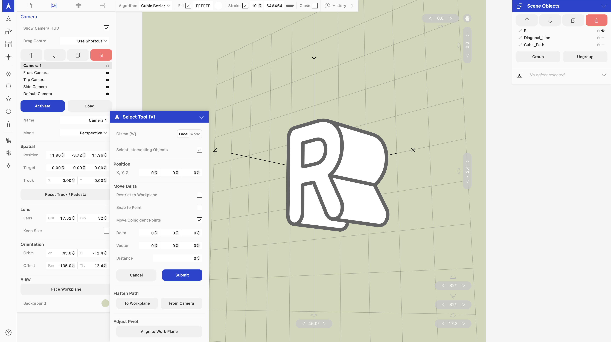

3D Application for graphic designers.
created by Masaya Ishikawa
Based on SVG, bezier curves, B-spline curves, perspective projection, orthographic projection,
oblique projection.

In this app, one can easily import (copy & paste) 2D path images from Adobe Illustrator CC (or other vector graphic software that uses SVG clipboard) to a 3D space and view, transform, extrude, revolve, sweep, map to a spline or a surface, and export (copy & paste) the result back to Adobe Illustrator. 3D matrix operations are applied to vector data. No rasterize.
Path data are stored as a simple array of 3D coordinates and you can switch the interpolation algorithm between Linear, B-Spline(Cubic), B-Spline(Quadratic), Cubic Bezier. B-Splines will be deconstructed to cubic bezier on SVG rendering and exporting.
It also has a set of vector graphic tools that work inside the 3D space:
I have been working on my own 3D graphic design app “dim”, a non destructive path based companion to Adobe Illustrator (or other 2D vector apps) inspired from Adobe dimensions, a software I used when I started my career as a student, and continued using since then.
Past 5 years, I studied 3D projection, spline interpolation algorithm, svg, and wrote a renderer, parser from scratch. Thanks to ai coding, the app has reached a point that I can finally move over from Adobe dimensions and I also wanted to share this tool to others (graphic designers that can not fit to pixel based 3D apps, like me).
If you find this project useful, please consider supporting the development on GitHub Sponsors.